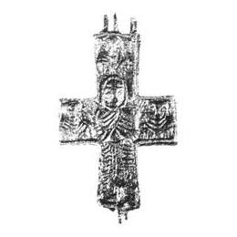
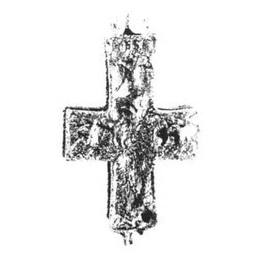

Catalog › CE-0221 · KOR2003-I.1.2
Encolpion cu capete dreptunghiulare, Orantă și trei sfinți pe față, Răstignire pe revers
sec. XIII (1201–1300) · Veliki Novgorod, Rusia · Muzeul-rezervație Unit de Stat din Novgorod (NGOMZ), Veliki Novgorod, inv. КП 38540; А122/120
double-sided reliquary cross (enkolpion), aramă; c. XIII (1201–1300); found at Veliki Novgorod, Rusia; kept at Muzeul-rezervație Unit de Stat din Novgorod (NGOMZ), Veliki Novgorod.




Identificare
- Categorie
- Encolpion bivalv (relicvar)
- Material
- Aramă
- Tehnică
- Turnare în relief
- Dimensiuni
- Î 53 × L 36 mm
Iconografie
- Avers
- Maica Domnului Orantă; Neidentificat
- Descriere avers
- Pe valva de față imagine în picioare a Maicii Domnului Orantă și trei imagini de sfinți pe jumătate (bust). Reliefurile figurilor sunt joase, la nivelul bordurilor valvei, doar capetele se ridică ușor deasupra lor. Capătul de jos al valvei este topit (poate defect de turnare).
- Descriere revers
- Pe valva de revers se întrevede Răstignirea cu adstanți și o cruce cu 4 brațe deasupra; valva este foarte puternic topită și are două găuri trecătoare cu margini neregulate (posibil toate urme de defect de turnare).
Datare și atribuire
- Datare
- sec. XIII (1201–1300)
- Centru
- Necunoscut
- Tipologie
- Korzukhina–Peskova 2003, tip I 1
Descoperire
- Localitate
- Veliki Novgorod
- Țară
- Rusia
- Context
- Așezare
- Anul
- 1990
Păstrare și referințe
- Colecție
- Muzeul-rezervație Unit de Stat din Novgorod (NGOMZ), Veliki Novgorod
- Nr. inventar
- КП 38540; А122/120
- Bibliografie
- G. F. Korzukhina, A. A. Peskova, Древнерусские энколпионы. Нагрудные кресты-реликварии XI–XIII вв., Sankt-Petersburg, 2003 [Korzukhina–Peskova 2003], p. 45, cat. nr. I 1/2, reprodusă la Табл. 3 (planșe, p. 245).
- Figura
- Табл. 3
- Planșe
- Korzukhina–Peskova 2003, Табл. 3 (planșă fără paginație proprie în PDF; p. 245 tipărită)
- Observații
- Datare după Peskova: sec. XIII. Circumstanțe: Săpături 1990, sectorul Troițki X, stratul 3, careul 1042, nr. 90 – nivelul 12 (anii 60 ai sec. XIII). Encolpion cu capete dreptunghiulare, ușor lărgite, cu imagini în relief; marginile valvelor sunt încadrate cu o bordură netedă joasă, tăvile sunt puțin adânci. Răstignirea de pe revers: tipul de veșmânt al lui Hristos nespecificat. Coordonate: nu sunt date în sursă.
Citare: Corpus Encolpiorum, CE-0221, Encolpion cu capete dreptunghiulare, Orantă și trei sfinți pe față, Răstignire pe revers, https://vitaliejosanu1979-ux.github.io/primul-meu-proiect/piese/KOR2003-I.1.2/ (accesat 2026-10-17).